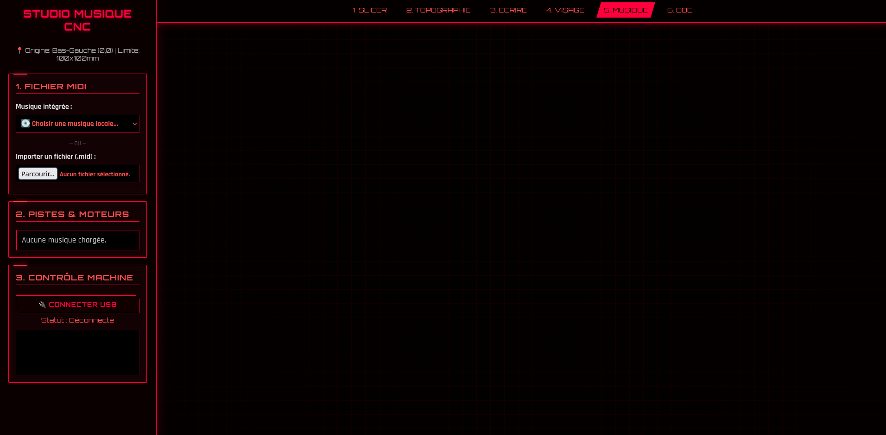

Module 5 : Le Studio Musique CNC
Le Studio Musique CNC est le module le plus atypique de la MachineThatDraws. Plutôt que de déplacer un stylo pour créer une image, ce logiciel utilise les moteurs pas-à-pas de la CNC comme des oscillateurs acoustiques. En contrôlant précisément la vitesse de rotation, la machine devient capable d'interpréter des partitions musicales complexes.

1. Analyse et Parsing MIDI
Le logiciel s'appuie sur la bibliothèque @tonejs/midi pour décoder la structure des fichiers .mid chargés par l'utilisateur ou sélectionnés via les presets.
- Filtrage Intelligent : Le script ignore automatiquement le canal 9, traditionnellement réservé aux percussions, car les moteurs pas-à-pas ne peuvent pas reproduire efficacement des sons atonaux.
- Sélection des Pistes : L'utilisateur peut attribuer une piste mélodique au moteur X et une piste d'accompagnement au moteur Y. Un mode "Unisson" permet également de synchroniser les deux moteurs sur la même mélodie pour doubler la puissance sonore.
2. La Physique du Son : Fréquences et Feedrate
Pour qu'un moteur "chante", il doit recevoir des impulsions électriques à une fréquence correspondant à une note de musique (ex: 440 Hz pour un La4). La conversion s'effectue via la formule standard :
- Gestion des Octaves : Pour protéger la mécanique, les fréquences sont bridées par algorithme. Le moteur X est limité entre 100 et 800 Hz, tandis que le moteur Y est limité entre 80 et 400 Hz. Le script effectue des divisions ou multiplications par deux pour rester dans ces zones de sécurité.
- Conversion en Vitesse (G-Code) : La fréquence est ensuite transformée en une vitesse de déplacement (Feedrate F en mm/min). C'est ce paramètre
Fqui définit la "hauteur" de la note jouée par la CNC.
3. L'Algorithme de "Mouvement Perpétuel"
Un défi majeur est de maintenir les moteurs en mouvement sans que le chariot ne percute les bords physiques du plateau (100x100mm). Pour cela, nous avons implémenté un algorithme de rebond balistique :
- Calcul de collision : Pour chaque note, le script calcule le temps restant avant que le chariot ne touche un "mur" virtuel à la vitesse donnée.
- Inversion de direction : Dès qu'une collision est imminente, le script multiplie la direction par -1. Le chariot rebondit instantanément dans l'autre sens sans interrompre la note de musique. (regarder la video si dessous pour un exemple)
- Gestion des Silences : Les silences de la partition sont traduits par des commandes de pause
G4 P[temps], stoppant momentanément les moteurs.
4. Modes Écoute vs Dessin
Le module propose deux expériences distinctes :
- Mode Écoute (▶) : Le stylo reste levé (
M3 S33). La machine se déplace librement pour jouer la musique. - Mode Dessin (🖍️) : Le stylo est abaissé (
M3 S0). La machine dessine la trajectoire chaotique générée par les rebonds des fréquences musicales, créant une œuvre d'art abstraite unique à chaque chanson.